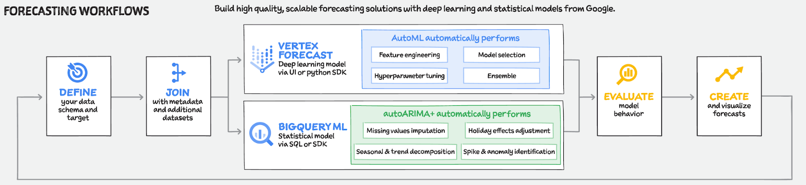
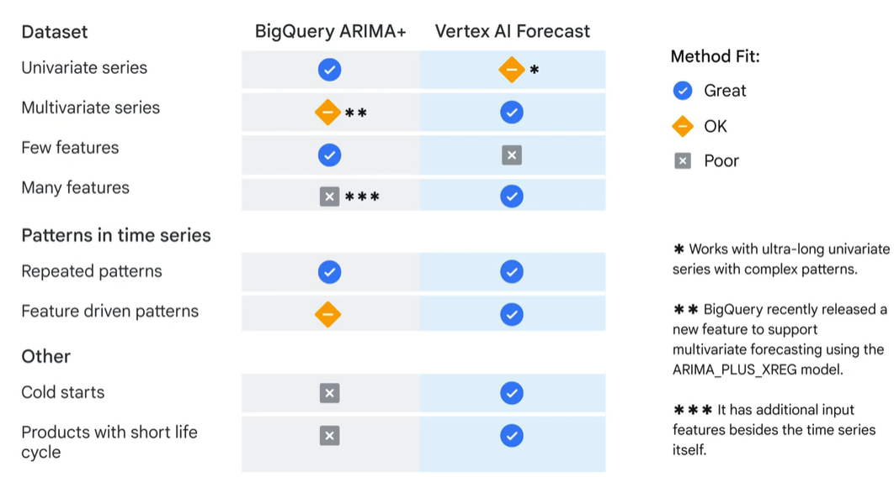
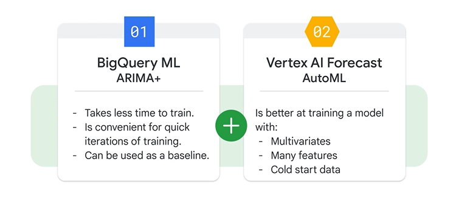
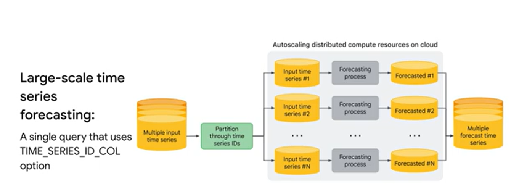
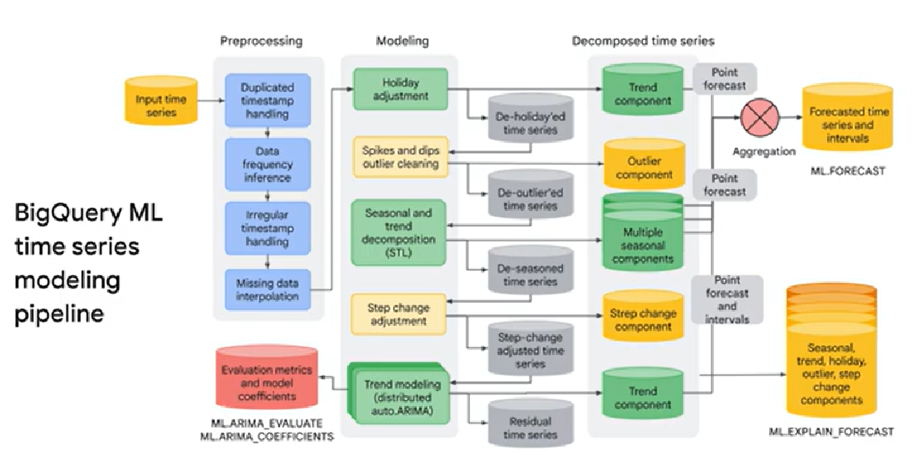

Forecasting Options on Google Cloud
1. Forecasting Options
Accurate forecasting is critical in practice, but there are challenges faced by current forecasting solutions:
- They usually require both domain knowledge and technical skills
- They require significant manual efforts in model construction, feature engineering and hyper-parameter tuning
- They can't handle a large amount of diverse data and make accurate predictions
Google Cloud Forecasting Solutions
To address these challenges, Google Cloud provides two primary options to build a time series forecasting model: - BigQuery ML: a low-code solution to build a forecast model with ARIMA+ - Vertex AI Forecast: a no-code UI-based solution to build a forecast model with AutoML
These options aim to reduce the manual work and allow data scientists to focus on business needs instead of technical operations. They also apply state-of-the-art ML technologies to handle large amounts of data and improve accuracy of predictions
Let's look at the general forecasting workflow and the key features of each option:

From https://cloud.google.com/blog/topics/developers-practitioners/vertex-forecast-overview- Define your time series data (schema and target)
- Join the data from multiple datasets (if required, e.g. supporting datasets containing additional features: attributes and/or covariates). The process of choosing which data to include and deciding the best way to represent it is called feature engineering (for example, categorical variables such as country and region need to be transferred to numeric variables to be included in the forecasting model).
- Vertex AI option (Deep Learning (DL) model through UI and Python SDK). AutoML automatically performs: feature engineering, model selection, hyperparameter tuning, ensemble
- BigQuery ML (Statistical model through SQL or SDK). ARIMA+ automatically performs: missing-values imputation, holiday effects adjustments, seasonal and trend decomposition, spike and anomaly identification
- Evaluate model behaviour
- Create and visualise forecasts
BigQuery ML ARIMA+ vs Vertex AI Forecast comparison

- Univariate time series: when the data only contains one target variable changing over time (e.g. daily sales of one product), BQ ML ARIMA+ is recommended because it is based on a statistical model, which takes less time to train
- Multivariate time series: multiple target variables are changing over time (e.g. daily sales of various products), Vertex AI Forecast is a good choice because it benefits from DL models and preforms better with a global model combining multiple time series. However, BQ ML has recently added a new feature to support multivariate forecasting using the
ARIMA_PLUS_XREGmodel. - Number of features: BQ ML ARIMA+ works bets when fewer features are included in the forecast, while Vertex AI Forecast works bets when many features are involved. This is because Vertex AI can detect the relationships and incorporate the dependencies among these features used in an ML model.
- Repeated patterns: both BQ ML ARIMA+ and Vertex AI Forecast can detect them. However, the latter can also extract and then extrapolate upon feature-driven patterns.
- Sparse data: Vertex AI Forecast performs better with cold starts and products with short life cycle.
In summary: BQ ML ARIMA+ is better for univariate time series data with few features and repeated patterns, while Vertex AI Forecast is good at handling multivariate data (due to its capability of modelling covariates), data with many features, cold starts and products with a short life-cycle.
You can also use them in tandem when you have a heterogeneous time series dataset (simpler and more complex data):

In addition to AutoML (which let's you build high-quality models with minimal effort and limited ML expertise), Vertex AI Forecast also provides Custom training, a more advanced method that let's you run any custom container with training applications in the cloud (so you can train a forecasting odel from scratch and build the pipeline manually with code)
2. Forecasting with BigQuery ML
Benefits of using BigQuery ML
- Low-code solution: you only need two essential steps, model creation and model prediction. With few SQL command lines you can implement a forecasting solution
- Scalabilty and convenience: if you already use BigQuery to store your structured data, it's convenient to develop a forecasting model on the same platform and benefit from the scalability and the data management provided by BigQuery
- Robust forecasting: BQ ML provides an automated model selection function that is continuously tested and constantly improved. As a user, you don't have to choose the model manually
- Acceptance: by various audiences, more and less technical (SQL developers, ML engineers, data analysts and economists)
Key phases for building a forecasting project
These are the key phases of using BQ ML to build a forecasting project:
- Extract, transform and load data into BQ:
- You can enrich your existing data warehouse with other data sources by using SQL joins
- Select and pre-process features:
- Use SQL to create the training dataset that the model will learn from
- BQ ML does some of the pre-processing for you (e.g. one-hot encoding of categorical variables into numerical variables)
- Create a model inside BQ:
- Use the
CREATE MODELcommand, give the model a name, specify the model type (ARIMA_PLUS) and pass the training dataset
- Use the
- Evaluate the performance of the trained model:
- After the model is trained, you can execute an
ML.EVALUATEorML.ARIMA_EVALUATEquery to evaluate the performance of the trained model on your evaluation dataset - You can analyse a range of evaluation metrics, including loss metrics (e.g. Root Mean Squared Error/RMSE)
- After the model is trained, you can execute an
- Use the model to make predictions:
- Once you are happy with your model performance, you can use it to make predictions
- You can use
ML.PREDICTandML.EXPLAIN_FORECASTcommands
ARIMA+
The BigQuery ML solution is based on a statistical model ARIMA (AutoRegressive Integrated Moving Average), a widely used statistical model for time series forecasting.
Large-scale time series forecasting
If you want to run large-scale time series foreacasting, you can use a single query that uses the TIME_SERIES_ID_COL option, to run up to 100 million time series with different model pipelines simultaneously

BigQuery ML time series modelling pipeline

-
Pre-processing: to load the pipeline, time series data must be pre-processed.
- BQ ML helps handle irregular time intervals, duplicated timestamps and missing data.
- A practitioner needs considerable domain expertise before and during this stage (e.g. knowing how to join the data sources, decide time series granularity, choose different approaches to handle missing data)
-
Model development: this includes training and evaluation
- BQ ML automatically handles in the backend tasks such as: cleaning spike and outliers, adjusting holiday effect and hyperparameters tuning
-
Model prediction/forecasting: multiple time series models can be aggregated to make an overall forecast.
- BQ ML also provide the function
ML.EXPLAIN_FORECASTwhich helps you to interpret the impact of different components (e.g. season, tren and holiday) on forecast results
- BQ ML also provide the function